LOL look at her
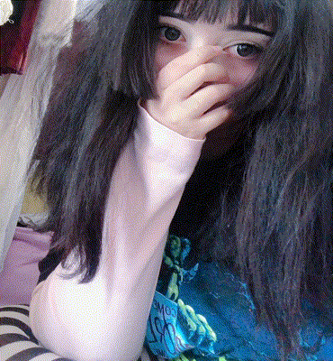 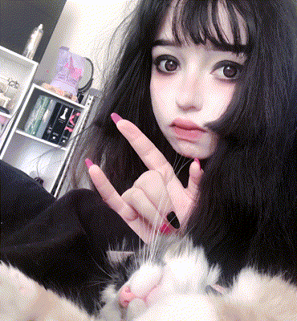 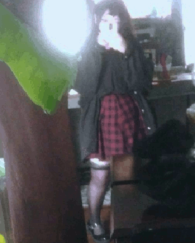 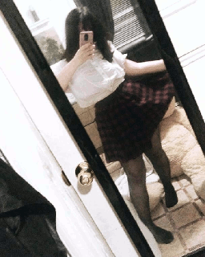 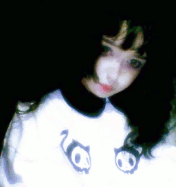 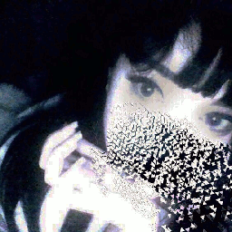 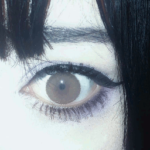 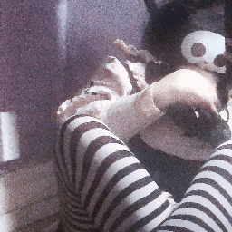 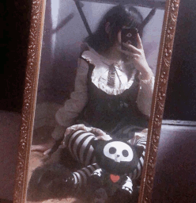 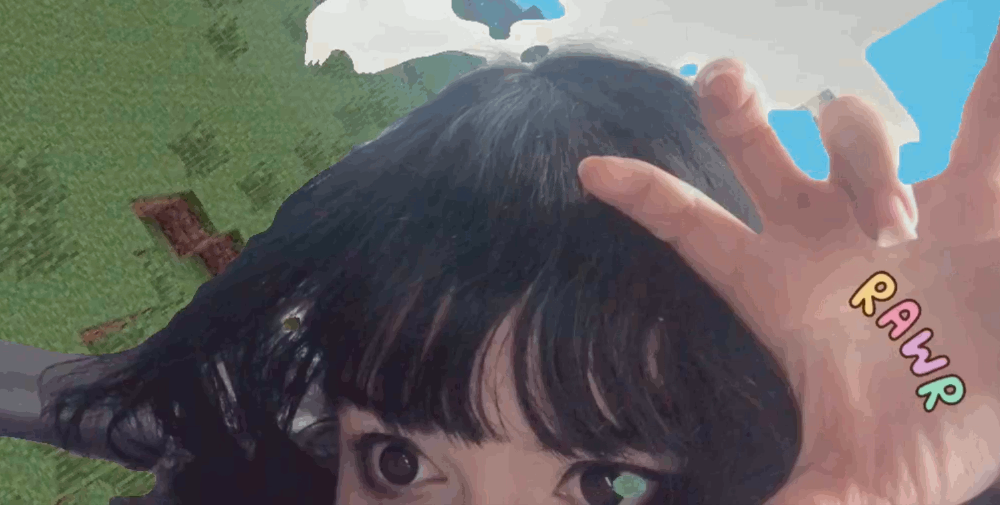 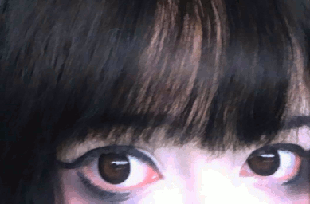
hi, i know there is most likely no use in getting through to most here, but can you please leave me alone ? i am really tired of getting weird messages and adds and i have abandoned this account for that reason, but they are now migrating to my other social media. i would continue to go private ideally, but having a public profile allows me to grab more art commissions and whatnot. dale, me and you haven’t had a single one on one conversation, and when we did talk, it was all shitposting. people from my server called you bad names but i defended you because i thought you were funny, until you sent me photos of bianca. you didn’t just send me a meme, you saw i was at her funeral, and spammed me with memes of her corpse and her corpse itself. i know bia has a bad rep, but please keep in mind i knew her in real life, and i was grieving at her funeral that night. that was unforgivable to me, and that is why i cut the friendship. and this weird.. orbiting things just intensifies it. and as for the photos of me, it would be appreciated if you would delete them from here and the website. i know that seems contradictory since i posted them myself publicly, but i really get anxious seeing myself being posted. i don’t care for anyone’s opinions on me and my body, i don’t want to hear any of it. i stopped posting or taking photos of myself a long time ago, and i intend to keep it that way.
"So I was admin on her first server (that I know of), premonition, she gave me that role randomly and I did well with it so she let me keep it. At the time she was edating (I guess) a guy named seven. Also at the time Lain's server 3 was in business and nine and five (then arid) were jannies there, fun time overall, kind of autistic as standard with Lain servers (he kept kicking people without roles and gave them out less frequently over time) but great. During or after this, seven was banned from premonition due to his breakup with nine, I asked nine why and she said it was because his friend joked about raping her in vc and he did nothing about it I guess. Eventually Lain deleted his server, nine said it was due to his cat running away and being sad about it, and then left all servers. In his absence arid created a server called insipid in the same vein, though mostly private. I was janny there and there was a mod channel I had access to. At this time alai's server (lop) was now in business (idk if you know alai, he goes by hecks now) and seven joined this on an alt and messaged me to inform me it was him, and that's when nine talked in the insipid mod channel about how she was trying to leave servers to avoid seven. I screenshotted messages there to inform seven of nine's concern about him, to which seven said he was trying to avoid nine, which I conveyed back to her. (Side note: Reiko was in alai's server on an alt called babycakes and was eventually invited to insipid on this account and later his main.) Nine eventually found out I gave screenies to seven since seven texted them to nine, and she was annoyed and I apologized. Meanwhile nine banned someone in insipid for "spreading information" (he informed gunjy of why Lain went on hiatus) I complained and arid said he didn't want him there anyway and wondered why gunjy trusted him as mod. I was okay with this but later arid banned Chino and gummy for mysterious reasons (being associated with gunjy is my best guess), I threw a fit and banned someone else, falsely accusing him of spreading info and arid then banned me, unadded me and left premonition (couldn't dm him anymore). Soon after nine deleted premonition and asked me to recover tags of some people from there, I obliged and so began the first ghosting from nine. One thing you to know about nine is she loves cats and despises dogs, has a signature emote combo 🎤 🐈 (cat posting was a theme on Lain's server 3, gunjy was actually there and posted neko megus kek). Partly why she ghosted me is for posting "woof" in a riot chatroom she was in and apparently Kura sent her a screenshot of me posting 🎤 🐕 in another server, thus she would antagonize me in another server, calling me a dogposter (she was given mod here because the owner was an orbiter kek). Later she was invited to Hug Box, banned in the great purge (gummy banned many normies at once) and Kura made a spinoff server and invited everybody who was banned there. He gave me admin there and she would trollpost there and I would keep banning her and Kura would invite her back, we threw insults back and forth and eventually she would shill a server here called public owned by five (arid's new account), I joined, was kicked and then banned, I banned her for shilling, she came back and shilled more, etc. She would point out the insults I made in the server (somehow she was surprised I responded to her antagonizing lol), she would ask Kura to demod me, etc etc until eventually she asked me to vc with her. Apparently she wanted to make a truce, she said she was concerned with my screenshotting and was willing to forgive me and I was willing to forgive her, and she invited me back to public. Then nine decided to make a new server, dimension, for which you were there, and I asked to be admin there and I was given it. I was in contact with seven at the time (good friend of mine at this point), he mostly stayed in one server at this point and asked me for servers to join, preferably for art, so mistakenly I gave him nine's server since it has an art channel, but he got dismayed and asked me to delete the invite. After this came the alt invasion, nine has good reason to suspect it's seven given one of the alts was named similarly to an insta account of seven's I guess, but other suspects include Jusky (was on the orbiting server she was mod on and has access to VPNs), and loveulana (he had a disagreement with nine, also was owner of the orbiting server). Nine demodded me when she found I invited seven, then remodded me later, and at one point I was in VC with some people she invited from instagram, including normies and women, and complained about it in Hug Box. I later invited one to Hug Box, and made a channel called gamers-only where I talked about hating women and minorities (nine would usually make meme text channels like rap or erp and later delete them, I figured it was similar), nine saw and demodded me, and I again complained about it in Hug Box (they said it was based lol). She offered me mod again and I refused this time (I wanted to wean off powertripping), I would vent time to time in there until one day I was drunk and posted "xumi and based" (something xumi would say while drunk) and nine banned me and told me to come back when sober, then ghosting me. She sent me an invite and I joined on two alts (this account and another) and then on my main, which was banned again. Skip forward to Lain's server and when Lain made nine mod she explained she ghosted me because I complained about her server in other servers and she didn't trust me because I had a tendency to spread info."
"Nine, also known as Seraph, is a possibly mythological being rumored to be in upstate New York, close to the headed e-thot Bianca Devins. The first instance of Seraph on the internet, that still exists, is her Instagram. On the 31st of Octobor, 2017, Nine posted a picture of a cemetary..
Appearently Seraph, whose irl name might be Ayla, had a coma for either three weeks, three months, or three years (I honestly cannot remember), after which she e-dating Seven for some time before they had a messy breakup. It was during this time that Seraph would steal Seven's alt name of Nine.
Nine then met an e-boy named Arid who would follow along with the Number Names and become Five; and, of course, they began e-dating aswell. Because Nine cannot keep her e-legs e-closed. They would open many Discord servers together – namely: Preminition, Dimension, and Dimension. Nine would meet Dale (who would later become Seven) on another Discord server called Runescape GF, also home to the famed Jusky. Runescape GF has since gone down due to the owner simping over an e-girl named Lex who (quite possibly) cucked Reb. These people aren't important to the story here, so we'll move on.
It was around this time that Nine would grow an obsession around Swampy (aka Swampert the Pokemon) and would day dream and talk about wanting 'Swampy' to vore her (him).
I have to take a shower so this is all for now, might update this later who knows."